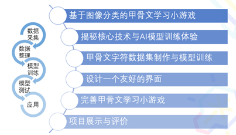

课程：趣味甲骨文学习小游戏
课程简介
《趣味甲骨文学习小游戏》是一门AI+传统文化主题的项目式学习课程，引导学生亲身参与从数据收集、模型训练到模型部署的完整过程。配合课程设计分成大任务和子任务，大任务是完成一个趣味甲骨文学习小游戏，小任务则围绕项目创作的流程进行拆分，包括主题选择、创意构思、数据准备、模型训练、游戏开发、测试优化等。使学生结合甲骨文的独特魅力，体验现代手写识别技术的神奇。借此项目，鼓励学生激发创意，设计并打造属于自己的甲骨文识别小游戏。在实践中，培养学生的团队合作、项目管理与沟通技巧。
适用范围：初中、高中；具备基本的计算机操作知识，有初步的编程经验。
课程内容
实施成效预期：
学生能够通过亲自动手实践，更深入地了解甲骨文与手写识别技术。
培养学生的创新思维和团队协作能力。
项目预期成果【大任务】：
每个小组将完成一个创意的趣味甲骨文学习小游戏，并能够在班级中展示其功能和特点。
项目任务【分任务】：
1.启蒙与体验：体验教师提供的甲骨文分类小游戏，探索其背后的技术原理。
2.主题选择：挑选几种具代表性的甲骨文字符，作为游戏的核心内容。
3.创意构思：思考你的甲骨文学习游戏的玩法、功能与界面设计。
4.数据准备：积极搜集和制作高质量的甲骨文字符图片。
5.模型训练：利用提供的工具或平台，训练一个能准确识别所选甲骨文的模型。
6.游戏开发：根据前期的构思，开始编程和制作你的趣味甲骨文学习小游戏。
7.团队测试：小组成员间先行测试游戏，收集反馈并迅速迭代优化。
8.班级分享：向全班展示你的作品，并积极听取同学们的反馈与建议，进一步完善。
9.举一反三：学以致用，设计自己的AI应用。
课程设计
课程目标：
需求与数据：认识ImageNet格式数据集；
算法与算力：了解图像分类常见算法和LeNet、体验模型训练超参数调整；
部署与交互：能制作简易的AI模型效果展示应用，掌握简单的用户界面设计技能教学内容：
课时安排：

教学资源设计：
联网的电脑、Chrome浏览器、浦育平台、XEdu工具。
准备了PPT、学习单。
学习评价设计：
评价标准：
1.项目完成度：游戏的功能是否齐全、是否运行流畅。
2.团队合作：每个组员的贡献如何，团队之间的沟通与合作是否顺畅。
3.创新性：游戏中有无新颖的功能或设计。
4.演示：展示的清晰度、组织性及与观众的互动情况。
评价对象：
1.小组之间的反馈：每个小组都需要对其他小组的项目给出反馈。
2.教师反馈：教师需要对每个小组的项目进行评价，并提供改进的意见。